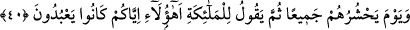

sûretleri bir takım arazlardır. Cevherleri ise o amelleri yapanların maksadları, ilimleri,
inançları ve himmetleri ile ilgili hususlardır. Bu hadîsin siygası/lafzı mutlaktır. Haller
ve karîneler onu tahsis eder. Çünkü câmileri, mescidleri, ribatları ve ibâdet yerlerini
binâ edenler ihtilafsız ecir alırlar. Bu hadîste zikredilen sâhibinin gezip tozmak, keyfî
olarak, gösteriş için ve desinler diye yaptığı binâdır. Böyle olunca bu kişinin arzu ve
himmeti bu âlemi geçmez. Onun için de yaptığı binânın âhirette bir semeresi ve netîcesi
olmaz. Çünkü bu kişi yaptığı ile bu dünyanın ötesinde bir şey kasdetmemiştir. Öyleyse
onun işleri kaybolup giden bir takım arazlardır. Bu işlerin buradan âhirete geçmesini
gerektiren bir durum yoktur. Onun için böyle işlerin semeresi ve ecri yoktur.”
Bilesin ki ulemâ infak konusunda değişik görüşler beyan etmişlerdir. Zâhir olan,
infakın insanların tabakalarına göre olmasıdır. Ebû Bekir Sıddîk (r.a.)’ın yaptığı gibi
bazıları yakîninin kuvvetinden dolayı Allah’a tam bir tevekkül ile malının tamamını
infak eder. Bazıları malının bir kısmını infak eder, mallarından nimetlenip faydalanmak
için değil ihtiyaç zamanında infak etmek üzere de bir kısmını elinde tutar. Kimisi de sırf
farz olanı edâ etmekle yetinir.
Gazzâlî (r.h.) der ki: “Sâdece farz olan mâlî ibadetleri edâ etmekle yetinmek
cimrilerin sınırıdır. Az bir şey de olsa bu farz olan miktarı artırmak lâzımdır. Bu
tabakalar arasında dereceleri bakımından fark vardır. İnfak konusunda Furkan sûresinin
sonlarında bilgi vermiştik. Oraya bak ve onları esas al.
Allah bizi ve sizi tutup biriktirmeden Allah yolunda harcayıp ihsan eden kimselerden
kılsın. İnfak ettiklerimizin yerine daha hayırlı karşılıklar versin. Çünkü O’nun hazineleri
hiç tükenmez, cömertlik denizi hep coşup taşar. Gece gündüz hep veren ve feyiz lütfeden
O’dur.
40. O gün Allah, onların hepsini toplayacak; sonra meleklere: “Size tapanlar
bunlar mıydı?” diyecek.
Ey Muhammed (s.a.), Allah Teâlâ’nın büyüklük taslayanları, zayıf sayılanları ve
onların Allah’tan başka taptıklarını toplayacağı günü kavmine hatırlat. “O gün Allah,
onların hepsini toplayacak;” onlardan hiçbiri geri kalmayacak “sonra” kendilerine
ibadet eden müşrikleri azarlamak ve iddiâ ettikleri üzere meleklerin şefâatinden
ümidlerini kesmek için “meleklere:” dünyada “Size tapanlar bunlar mıydı?” bu
kâfirler miydi? “diyecek.”
Bazıları bu toplanacak olanların Huzâa kabilesinden Müleyhoğulları olduğunu
söylemiştir. Onlar meleklere tapıyorlar ve meleklerin Allah’ın kızları olduğunu, onun
için onları gizlediğini söylemişlerdir. Eğer “Cinler de insanlara görünmedikleri halde
neden cinler hakkında böyle dememişlerdir?” dersen, şöyle cevap veririm: Çünkü